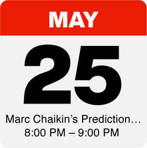
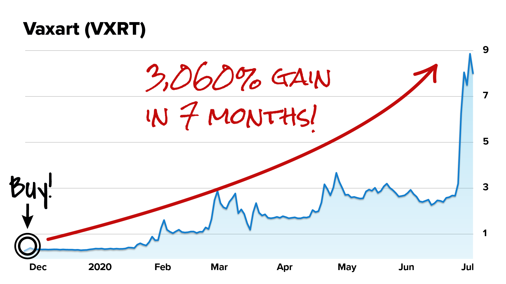
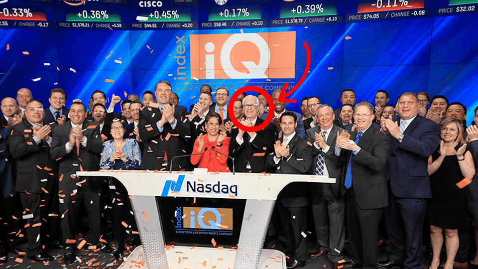

On May 25th at 8 pm ET, Marc will share the BIGGEST PREDICTION of his 50-year Wall Street career… a massive and surprising new transition that could determine the next group of millionaires in America.
To prepare you… Until May 25th, he’s offering you a free report:
Enter your cell number to receive immediate free access.
You can sign up for our VIP reminder service by entering your mobile phone number in the box below. (All our event VIPs get a complimentary text message ahead of the event so you don't accidentally miss it)...

Be sure that you don't miss this groundbreaking event! Go ahead and add an event reminder to your calendar by clicking here. (This will automatically add an appointment to your computer calendar).
CNBC’s Mad Money host, Jim Cramer says:
“I learned a long time ago not to be on other side of a Chaikin trade. I want to explain why I love Marc’s stuff. It’s simple, it’s understandable, it’s rational, it’s not emotional, and I use it constantly and I almost never want to go against it.”

Predicted a “black swan” Crash years before COVID-19
Predicted the big drops in 2018
Predicted the Melt Up would continue after the 2020 crash
Famously called the stock collapse of Priceline.com on CNBC’s Mad Money, showing one trader a 788% peak gain overnight.
Regular guest on CNBC’s Mad Money with Jim Cramer
Began on Wall Street in 1966
Survived and thrived in 9 bear markets
Founded the institutional brokerage Bomar Securities, which he sold to Reuters
Launched his own firm, Chaikin Analytics
The “who’s who” of the hedge fund world, including funds run by George Soros, Steve Cohen, Paul Tudor Jones, and David Shaw.
Even CNBC’s Jim Cramer was a client!
Developed Chaikin Money Flow and the Chaikin Oscillator, widely used on Wall Street for predicting a stock’s price action.
Both appear on every Bloomberg terminal across Wall Street and are used every day by hundreds of banks, hedge funds, and brokerages.
Rang the opening bell at the Nasdaq

Won 2019 “Best Industry Research Provider” award from WealthManagement.com
Won Benzinga Fintech Award for Best Trading Idea Platform
Created 3 new indices for the Nasdaq